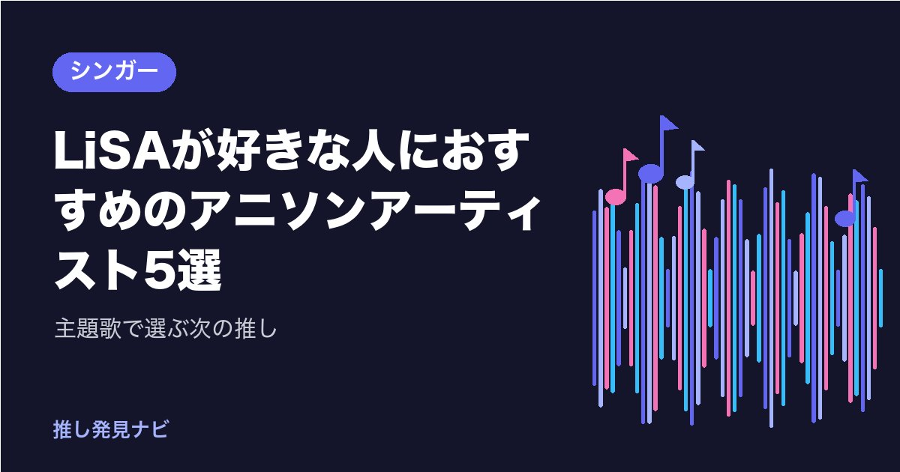

LiSAが好きな人におすすめのアニソンアーティスト5選｜主題歌で選ぶ次の推し

『鬼滅の刃』の「紅蓮華」「炎」で国民的な知名度を得て、2026年にソロデビュー15周年を迎えたLiSA。
力強いロックボイスでアニメの主人公に寄り添う歌に、何度も励まされてきた人も多いでしょう。
この記事では、LiSAが好きな人にぜひ聴いてほしい、アニメ主題歌で活躍する5組を紹介します。
LiSAの魅力をおさらい
LiSAは岐阜県出身の女性ロックシンガーです。2010年にアニメ『Angel Beats!』の劇中バンドの歌唱で注目され、2011年にソロデビューしました。「oath sign」「crossing field」など、数々のアニメ主題歌を歌ってきました。
題材は「立ち上がる」「戦う」「弱さを抱えて進む」。パンクやラウドロックの疾走感にストリングスの劇的さを重ねたサウンドと、太く張りのある声で言葉を前に出す歌唱が魅力です。今回は同じくアニメ主題歌で存在感を放つアーティストを、歌声のタイプ別に選びました。
歌声の質感で魅せる女性シンガー
Aimer
ハスキーで甘い声を持つ女性シンガーです。2011年に「六等星の夜」でメジャーデビューし、『鬼滅の刃』遊郭編の「残響散歌」で広く知られるようになりました。
低めでかすれた質感と、ささやきから一気に張り上げる幅が最大の特徴。夜や星、別れの後の静けさを描く端正な歌詞も魅力です。声の張りで押すLiSAに対し、Aimerは質感で聴かせるタイプ。同じ『鬼滅の刃』の主題歌つながりで聴き比べると、それぞれの個性がよくわかります。作曲は梶浦由記や野田洋次郎、澤野弘之など外部の作家が中心で、作家によって曲調が大きく変わっても、声ひとつで統一感を生み出すのも魅力です。「蝶々結び」「カタオモイ」「Brave Shine」もおすすめです。
milet
2019年に「inside you」でメジャーデビューしたシンガーソングライターです。低く深いアルトの声と、英語と日本語が自然に混ざる歌詞が特徴。『葬送のフリーレン』のエンディング「Anytime Anywhere」などで知られます。
ピアノとストリングスを軸にしたバラードやエレクトロポップで、孤独の中の愛や、そばにいることの温かさを歌います。LiSAが「走るロック」なら、miletは「沈むバラード」。対照的だからこそ、アニメ主題歌の幅広さを味わえます。英語のフレーズをサビの息継ぎのように使う歌詞の作り方も独特です。作詞作曲には本人が全曲参加しています。MAN WITH A MISSIONとの「絆ノ奇跡」もおすすめです。
アイナ・ジ・エンド
大阪出身の歌手・ダンサーで、「楽器を持たないパンクバンド」BiSHのメンバーとして活躍した後、ソロで活動しています。喉を鳴らすようなハスキーで太い声と、ささやきから絶叫までの振れ幅が最大の武器です。
2026年には『ONE PIECE』エルバフ編のオープニング「ルミナス - Luminous」を担当。ダンサー出身ならではの身体性の強いパフォーマンスも魅力です。LiSAのライブ映えする歌唱が好きな人なら、アイナの表現力にも惹かれるはず。「金木犀」も聴いてみてください。
アニソンの職人たち
MYTH & ROID
作曲家Tom-H@ckを中心に2015年に始動したユニットです。『オーバーロード』『Re:ゼロから始める異世界生活』『幼女戦記』などダークファンタジー作品の主題歌を継続して担当しています。
重いギターリフとシンセ、ストリングスで映画の予告編のような迫力を作るサウンドが特徴。ボーカルKIHOWの多彩な声色も魅力です。LiSAのアニメ主題歌の中でも、劇的で激しい曲が好きな人におすすめ。作曲はTom-H@ck、作詞はhotaruが担い、英語と日本語を半々に混ぜた文語的で硬質な言葉で、作品の世界観に密着した物語を描きます。「STYX HELIX」「Paradisus-Paradoxum」「JINGO JUNGLE」をどうぞ。
オーイシマサヨシ
愛媛県出身のシンガーソングライターで、2014年からアニメソング歌手として活動しています。『月刊少女野崎くん』の「君じゃなきゃダメみたい」、『SSSS.GRIDMAN』の「UNION」などで人気を集めました。
シティポップやファンクを引用したサウンドに、アニソンらしい速いテンポと転調を合わせ、サビの頭でタイトルを歌う覚えやすい設計が魅力。作詞作曲編曲を自ら手がける職人でもあります。Tom-H@ckとのユニットOxTでは、よりロック色の強い曲も歌っています。LiSAの明るく盛り上がる曲が好きな人なら、ライブで一緒に楽しめる曲がきっと見つかります。「オトモダチフィルム」もおすすめです。
聴き比べのポイント
| アーティスト | LiSAとの共通点 | 聴きどころ |
|---|---|---|
| Aimer | 『鬼滅の刃』の主題歌 | ハスキーな声の質感 |
| milet | アニメ主題歌の女性ボーカル | 低く深いアルト |
| アイナ・ジ・エンド | 声の個性で勝負 | 囁きから絶叫までの幅 |
| MYTH & ROID | 劇的なアニメ主題歌 | 映画のような迫力 |
| オーイシマサヨシ | ライブで盛り上がる曲 | 明るいファンクとロック |
まとめ
LiSAが好きな人には、質感で聴かせるAimer、深い声のmilet、圧倒的な表現力のアイナ・ジ・エンド、ダークで劇的なMYTH & ROID、明るい職人オーイシマサヨシがおすすめです。
好きなアニメの主題歌から入ると、作品の思い出とともに新しいアーティストの魅力に出会えます。
LiSAと一緒に聴きたい一曲を、ぜひ探してみてください。
気になった1曲を、今日1回だけ聴いてみませんか。各アーティストの公式チャンネルや配信サービスで聴けます。
あなたの好きなアーティストは誰ですか？
最後まで読んでくださり、ありがとうございました。